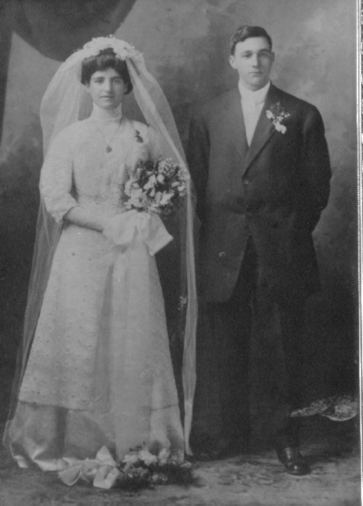

Italian Roots
Pasquale Ialenti and Michelina Mattarocchia were both born in the small town of Campolieto in Italy. They married around 1880. In 1888 Pasquale immigrated to the United States. Family legend has it that when he arrived at Ellis Island, the clerk asked Pasquale his name - "Ialenti" he replied, to the best of his ability. The clerk wrote down Yalenti.
By 1898 his family had joined him in Penn Township near Pittsburgh where he took up farming. Leonardo Strazza and his wife Isabella Gialinelli were born in Naples, Italy. By around 1880, they had immigrated to the US and settled on Mt. Washington, overlooking downtown Pittsburgh.
- Pasquale Ialenti and Michela Mattarocchia
- Leonardo Strazza and Isabella Gialinelli
- Francesco Calabro and Macrina Pennestri

Phillip and Margaret Ialenti